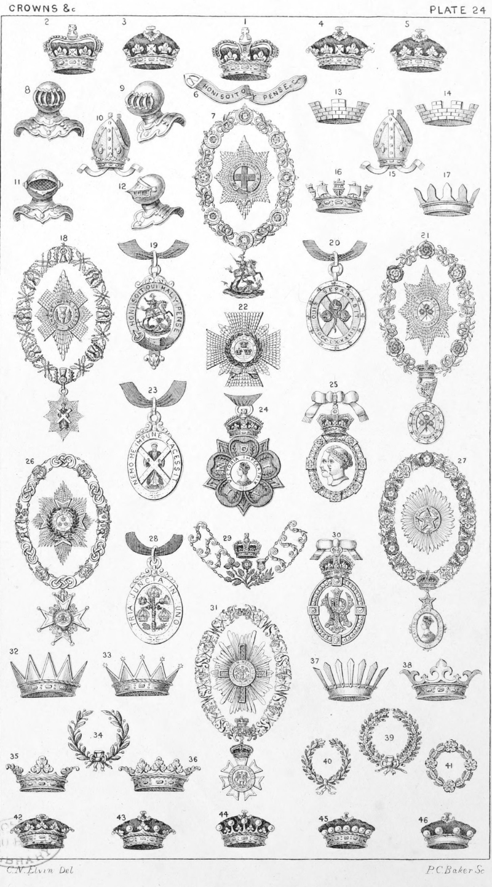

Plate 24.

Plate 24.
- Imperial Crown
- Coronet of the Prince of Wales
- Younger sons of Her Majesty
- Princess Royal and younger Sisters
- Nephews of the Blood Royal
- The Garter
- Collar, Star and Badge of the Order
of the Garter
- Helmet of the Sovereign
- Helmet of the Nobility
- Mitre of the Bishop of Durham
- Helmet of a Baronet and Knight
- Helmet of an Esquire
- Mural Crown with three embattlements
- Mural Crown with four embattlements
- Mitre of the Archbishops and Bishops
except the Bishop of Durham
- Naval Crown
- Vallary Crown
- Collar, Star, and Badge of the
Order of the Thistle
- Jewel of the Order of the Garter
- Jewel of the Order of St. Patrick
- Collar, Star, and Badge of the
Order of St. Patrick
- Star of a Knight Commander of
the Bath. K.C.B.
- Jewel of the Order of the Thistle
- Order of the Indian Empire, instituted 1st Jan., 1878, revoked 2nd
Aug., 1886
- Order of Victoria and Albert
- Collar, Star, and Badge of the Order
of the Bath
- Collar, Star, and Badge of the Star
of India
- Civil Badge of the Bath
- Collar of S.S.
- Order of the Crown of India
- Collar, Star, and Badge of St. Michael and St. George
- Eastern Crown
- Celestial Crown
- Triumphal Crown, or Wreath
- Ducal Coronet, or Crest Coronet of
three leaves
- Ducal, or Crest Coronet of five
leaves
- Palisado Coronet
- Crown of Edward I.
- Civic Crown, or Chaplet of Oak
- Olive Crown
- Chaplet
- Coronet of a Duke
- Coronet of a Marquis
- Coronet of a Earl
- Coronet of a Viscount
- Coronet of a Baron